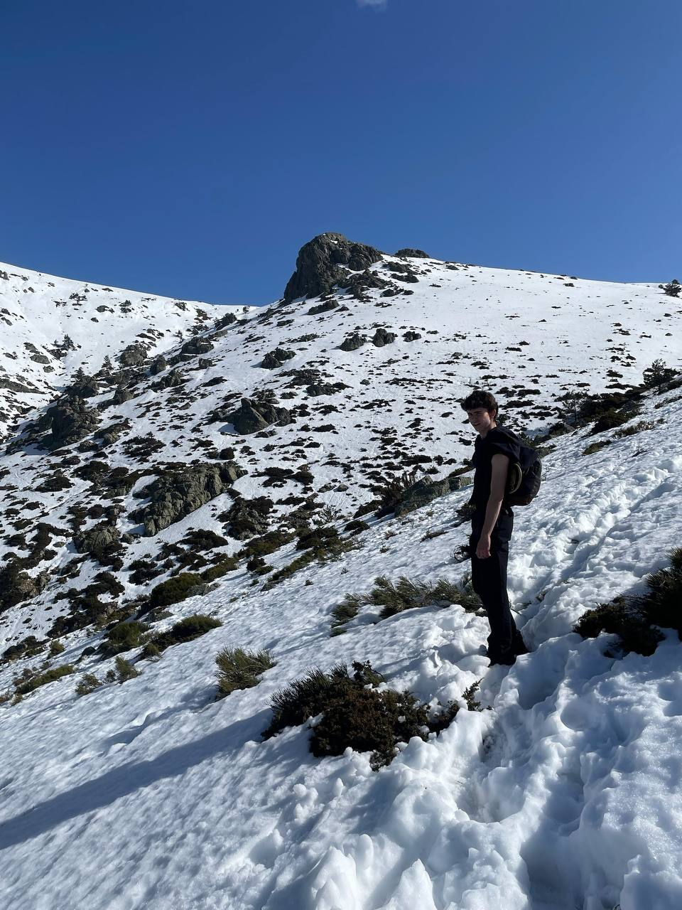
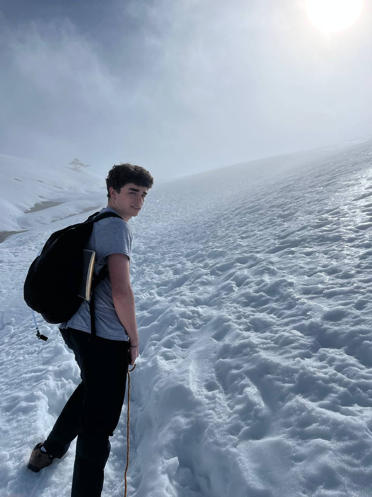
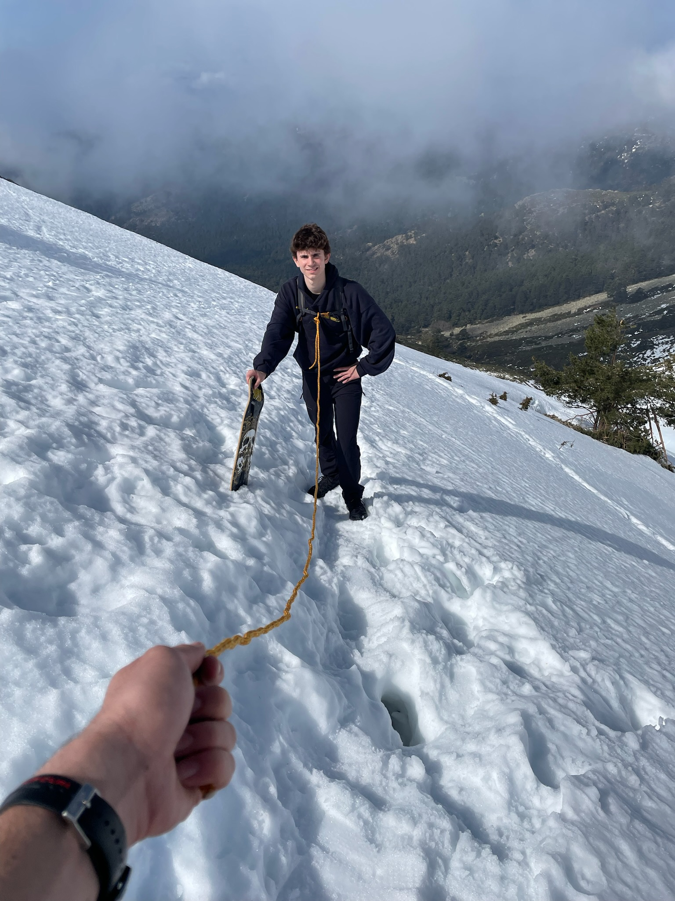

Todo esto empezó cuando dos chavales, Aitor y Gonzalo, decidieron subir un 2K en pleno invierno. Sin equipo, sin preparación, solo con una cuerda y dos skates sin ruedas con el fin de hacer skate-snow en la cima.
La nieve estaba dura, cada paso era un resbalón y, a mitad de subida, una tormenta les pilló de lleno. El viento borró el camino, la visibilidad desapareció y acabaron completamente perdidos. Casi no lo cuentan. Pero justo ahí, en ese momento en el que todo se les vino encima, entendieron que necesitaban un cambio. Un Kick. Una forma distinta de vivir: más movimiento, más experiencias, más vida (aunque la próxima vez más light).
Desde entonces, cada mes tiene su Kick. Lo mandamos en la newsletter para que tú también puedas hacerlo. Así que ya no hay excusas…
Porque no estamos hechos para quedarnos en casa.
-Equipo de RalphKick :)